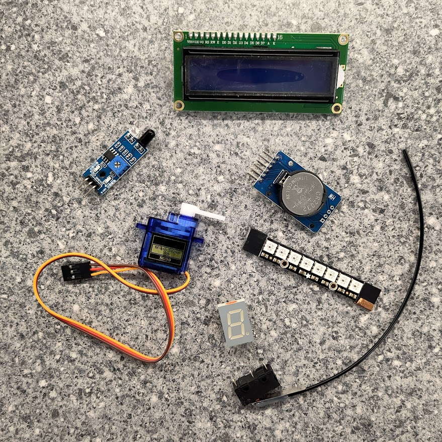

Optional Work 2: wiring diagrams
If you would like to achieve a Silver CREST Award, the suggestions below will help you to extend your robot project.
Remember to save copies of your work and/or take photographs, to use in your final report.
circuit diagrams
To learn more about circuits, see the BBC Bitesize guide.
To practice creating your own circuits, try the Tinkercad Circuits tutorials.
soldering
If you have soldering equipment at home, at school, or in an after-school club, you can practice with other kits.
Let us know if this applies to you, and we will give you another practice kit to work on.
Click here for a guide to identifying components and where to place them on a new PCB.
wiring an ultrasonic sensor
...description of how these are connected...
...photograph of how these are connected...
...drawing of how these are connected...
...draw your own circuit diagram for two ultrasonic distance sensors...
other components for your robot
In the future, once your robot is built and programmed, you might want to add extra things to it.
Some examples include:
- Servo motors
- LEDs
- Neopixels
- Infrared line following sensors
Research some of these components, or any others you have heard about.
- What do they do?
- How could they improve your robot?
- What voltage do they need to work properly?
- Has anyone connected them to a micro:bit before? Do they have any advice on how to connect it?
Pick your favourite component, and draw a circuit diagram of how to connect it to your robot.
If you bring your research to the next club session and discuss it with us, we might be able to give you what you need to add it your robot.